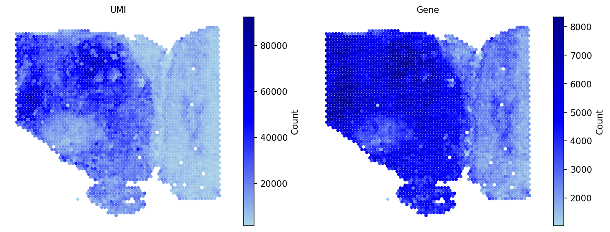
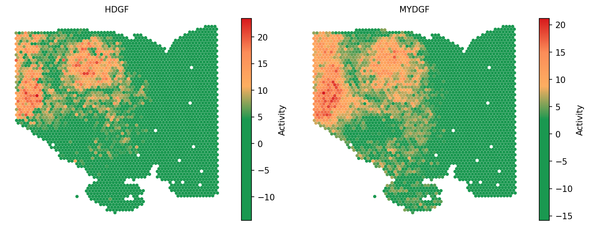
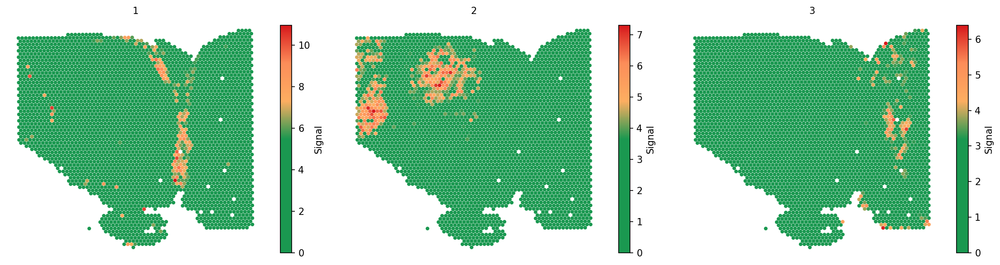
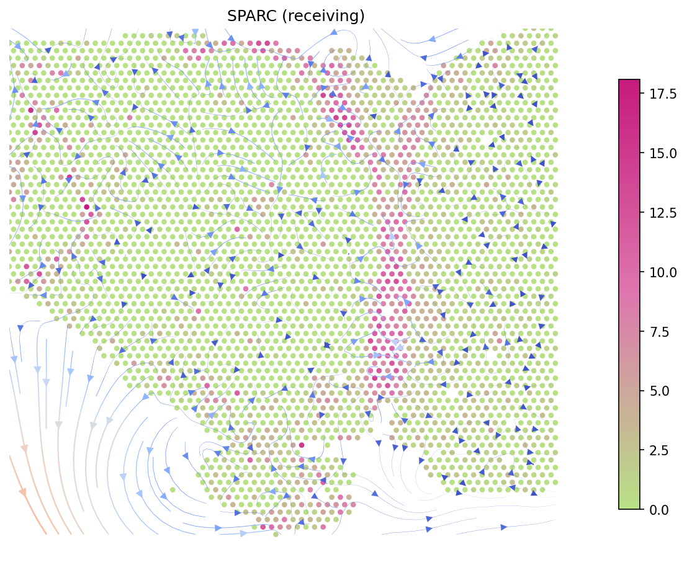
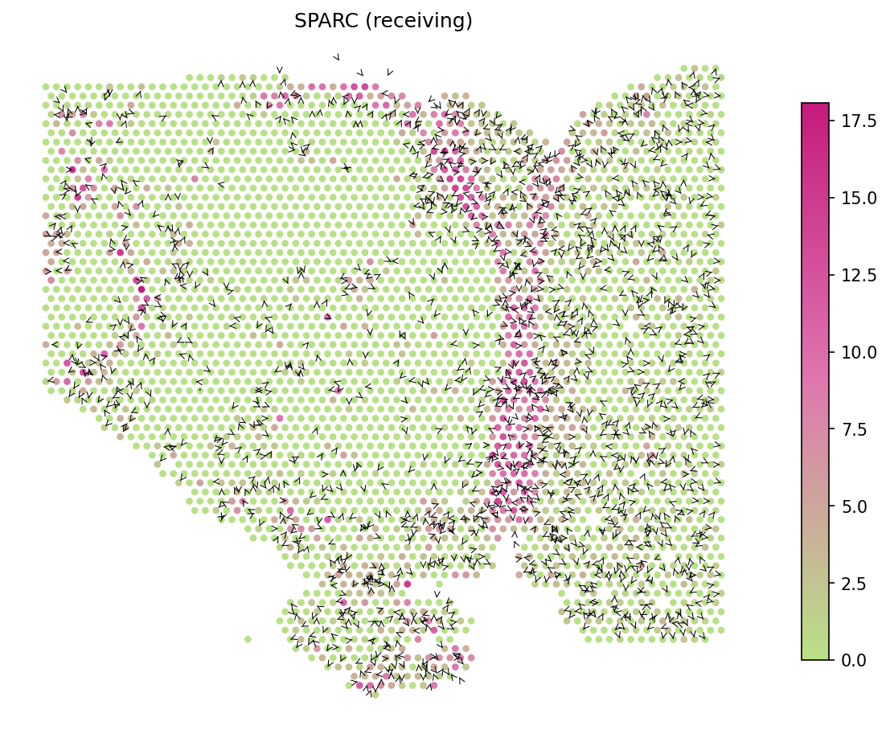
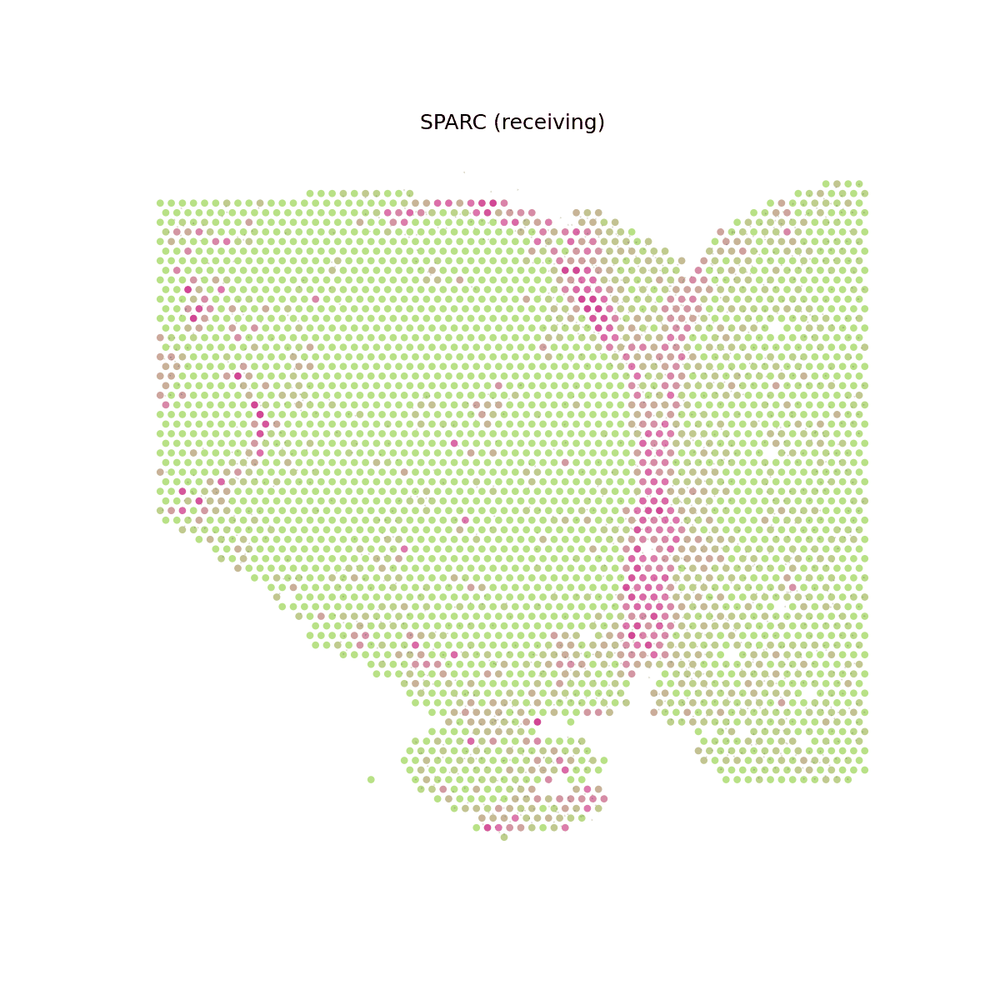
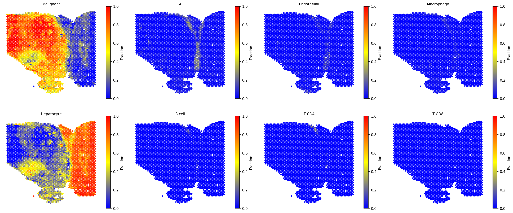
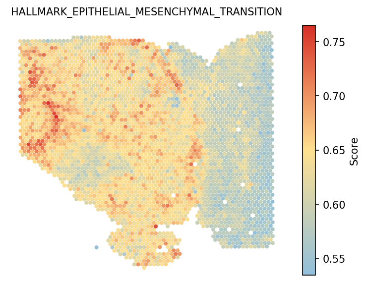

Signaling Patterns and Velocities for Spatial Transcriptomics
Python GPU-accelerated Adapted from the SecAct R tutorial using the spatial-gpu package
1. Read ST data to a SpaCET object
To load data into Python, user can create a SpaCET-compatible AnnData object
by using create_spacet_object_10x. Please make sure that
visium_path points to the standard output folders of 10x Space
Ranger. If the ST data is not from 10x/Visium, you can use
create_spacet_object instead.
import spatialgpu.deconvolution as spacet data_path = "data/Visium_HCC" adata = spacet.create_spacet_object_10x(visium_path=data_path) adata = spacet.quality_control(adata, min_genes=1000) spacet.visualize_spatial_feature( adata, spatial_type="QualityControl", spatial_features=["UMI", "Gene"], image_bg=True, )

2. Infer secreted protein activity
After loading ST data, user can run secact_inference to infer the
activities of >1,000 secreted proteins for each spot. The output are stored
in adata.uns['spacet']['SecAct_output']['SecretedProteinActivity'],
which includes four items, (1) beta: regression coefficients; (2) se: standard
error; (3) zscore: beta/se; (4) pvalue: two-sided test p value of z score from
permutation test.
# ~10 min adata = spacet.secact_inference(adata, scale_factor=1e5) # Access z-score activity matrix (proteins x spots) zscores = adata.uns['spacet']['SecAct_output']['SecretedProteinActivity']['zscore'] zscores.iloc[:6, :3]
spacet.visualize_spatial_feature( adata, spatial_type="SecretedProteinActivity", spatial_features=["HDGF", "MYDGF"], image_bg=False, colors=["#1A9850", "#1A9850", "#1A9850", "#1A9850", "#FDAE61", "#FC8D59", "#D7191C"], point_size=0.8, )

3. Estimate signaling pattern
After calculating the secreted protein activity, SecAct could further estimate the consensus pattern from these inferred signaling activities across the whole tissue slide. This module contains two steps.
First, SecAct filters >1,000 secreted proteins to identify the
significant secreted proteins mediating intercellular communication in this
slide. To achieve this, SecAct will calculate the Spearman
correlation of spots' signaling activity and spots' neighbors' RNA expression.
The p values were adjusted by the Benjamini-Hochberg (BH) method as false
discovery rate (FDR). The cutoffs are r > 0.05 and FDR < 0.01.
Second, SecAct employs Non-negative Matrix Factorization
(NMF)
to estimate the consensus signaling patterns. A critical parameter in NMF is
the factorization rank k. User can assign a number list to
k, e.g., k=range(2, 6). Then,
secact_signaling_patterns would find the optimal number of factors
determined as the point preceding the largest decrease in the silhouette value.
This will take a while. Based on our pre-calculation, k=3 is the
optimal number of factors. To save time, we directly run against
k=3.
adata = spacet.secact_signaling_patterns(adata, k=3) spacet.visualize_spatial_feature( adata, spatial_type="SignalingPattern", spatial_features="All", image_bg=False, legend_position="none", colors=["#03c383", "#fbbf45", "#ef6a32"], )

Further, SecAct can identify secreted proteins associated with
each signaling pattern according to the matrix W from NMF results. For one
secreted protein (represented by a row in W), the signaling pattern with a
value at least twice as large as any other pattern, is designated as the
dominant pattern for that protein.
pattern_gene = spacet.secact_pattern_genes(adata, n=3) pattern_gene.head()
4. Calculate signaling velocity
Several secreted proteins with pattern 3 are related to epithelial-mesenchymal transition process, such as COL1A1, TGFB1, and SPARC. By integrating secreted protein-coding gene expression and signaling activity, SecAct can also infer signaling velocity at each spatial spot, indicating the direction and strength of secreted signaling. Let's take SPARC as an example.
# Compute signaling velocity for SPARC velocity = spacet.secact_signaling_velocity(adata, gene="SPARC") # Show SPARC signaling velocity as contour map spacet.visualize_secact_velocity(adata, gene="SPARC", contour_map=True)

# Show SPARC signaling velocity at spot level spacet.visualize_secact_velocity(adata, gene="SPARC", contour_map=False)

# Show animated SPARC signaling velocity anim = spacet.visualize_secact_velocity(adata, gene="SPARC", animated=True) # anim.save("my_animation.gif", writer="pillow")

5. Deconvolve ST data
For the current ST data, user also can run the SpaCET deconvolution module to estimate the cell lineages for each spot. Based on the deconvolution results, we can see the interface region consists of fibroblasts, macrophages, and endothelial cells.
adata = spacet.deconvolution(adata, cancer_type="LIHC", n_jobs=8) spacet.visualize_spatial_feature( adata, spatial_type="CellFraction", spatial_features=[ "Malignant", "CAF", "Endothelial", "Macrophage", "Hepatocyte", "B cell", "T CD4", "T CD8", ], same_scale_fraction=True, point_size=0.1, nrow=2, )

6. Calculate hallmark score
User also can run gene_set_score to estimate the hallmark scores
for each spot. You can see that Pattern 3 is correlated with
epithelial-mesenchymal transition (EMT).
adata = spacet.gene_set_score(adata, gene_sets="Hallmark") spacet.visualize_spatial_feature( adata, spatial_type="GeneSetScore", spatial_features=["HALLMARK_EPITHELIAL_MESENCHYMAL_TRANSITION"], legend_position="right", image_bg=True, point_size=1.2, )
